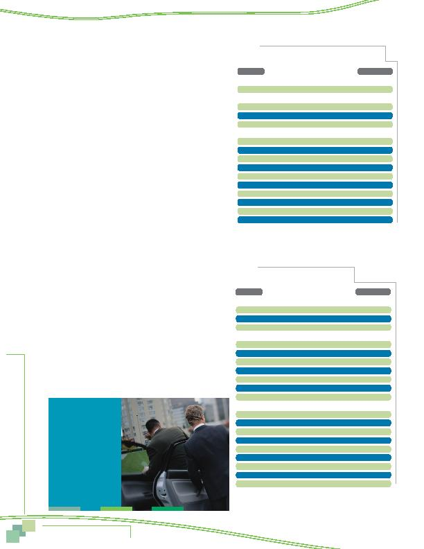

3 2
MWCOG-Comm
uter Conn
ecti
on
s-- 2010 State o
f th
e Comm
ute Report
3 2
ATTITUDES TOWARD TRANSPORTATION OPTIONS
Carpool/Vanpool Barriers
Respondents who did not carpool or vanpool to work were asked
why they did not use these modes. Table 8 shows respondents' barriers
to rideshare use, grouped into three reason categories: service avail-
ability, service characteristics, and personal preferences/needs.
The most common reason, cited by nearly half (45%) of respon-
dents was one of service availability; that they didn't know anyone to
carpool or vanpool with. Only a small share of respondents noted con-
cerns or barriers related to service characteristics. The most common
concern here was that carpooling and vanpooling take too much time.
Respondents noted greater barriers related to personal preferenc-
es/needs. The most common reason was an irregular schedule, cited
by 28% of respondents. About one in ten said they needed a personal
vehicle for trips before or after work or that their work responsibilities
required use of a vehicle. Six percent of respondents said they lived
too close to work to make carpooling or vanpooling attractive and six
percent said they did not want to ride with strangers or preferred to
be alone during commuting.
Transit Barriers
Respondents who did not use a bus or train for commuting were
asked why they did not use transit. Table 9 shows respondents' bar-
riers to transit use, grouped in the three reason categories: service
availability, service characteristics, and personal preferences/needs.
Respondents cited reasons in each category. About half of the
respondents said they did not use transit because they did not have
train service available and three in ten said bus service was not
available in either the home or work area. Respondents who did not
use bus or train also noted several characteristics of the services as
barriers to their use. The top reason in this group was that transit
"takes too much time," mentioned by a third of respondents. Small
percentages of respondents noted issues with cost, convenience,
comfort, and safety.
Common reasons in the personal preferences/needs category
included needing a vehicle for work or before or after work, having
an irregular work schedule, and that the trip was too long. Smaller
shares of respondents said the commute was too short, they needed
or wanted travel freedom and flexibility, and that they did not want to
ride with strangers.
Table 8
Reasons for Not Using Carpool/Vanpool to Work
(multiple responses permitted)
Reasons
Percentage
Service Availability
Don't know anyone to carpool/vanpool with
45%
Service Characteristics
Takes too much time
5%
Bus/train/carpool partner could be unreliable/late
2%
Doesn't save time
2%
Personal Preferences/Needs
Work schedule irregular
28%
Need my car for work
10%
Need car before/after work
1%
Live close to work, can walk, use other mode
6%
Don't like to ride with strangers, prefer to be alone
6%
Need car for emergencies/overtime
3%
Just not interested
2%
Prefer to drive, want freedom/flexibility
1%
Trip is too long/distance too far
1%
Other
5%
Table 9
Reasons for Not Using Transit to Work
(multiple responses permitted)
Reasons
Percentage
Service Availability *
No train service available in home/work area
52%
No bus service available in home/work area
29%
Don't know if service is available/location of service 2%
Service Characteristics
Takes too much time
32%
Too expensive
5%
Have to transfer/too many transfers
4%
Bus/train could be unreliable/late
3%
Have to wait too long for service
2%
Too uncomfortable/crowded
2%
Might not be safe
2%
Personal Preferences/Needs
Need my car for work
11%
Work schedule irregular
10%
Need car before/after work
9%
Trip is too long/distance too far
8%
Commute is too short
5%
Prefer to drive, want freedom/flexibility
4%
Don't like to ride with strangers, prefer to be alone
4%
Need car for emergencies/overtime
1%
Other
5%
* Respondents who said no train or bus service was available also were permitted to answer
other reasons why they could not use bus or train.
Availability of and Attitudes Toward
Transportation Options
More than half (54%)
of the respondents
who used HOV lanes
for commuting said
availability of the
lanes influenced
their decision to
carpool, vanpool, or
ride transit for their
commute.